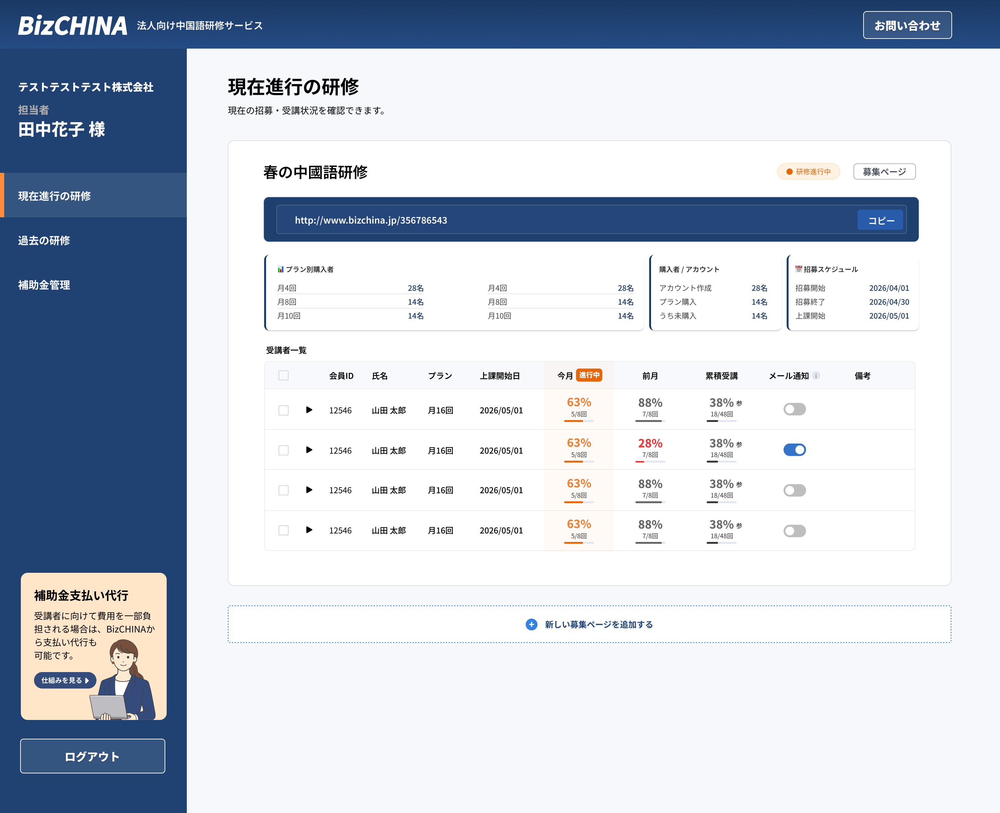
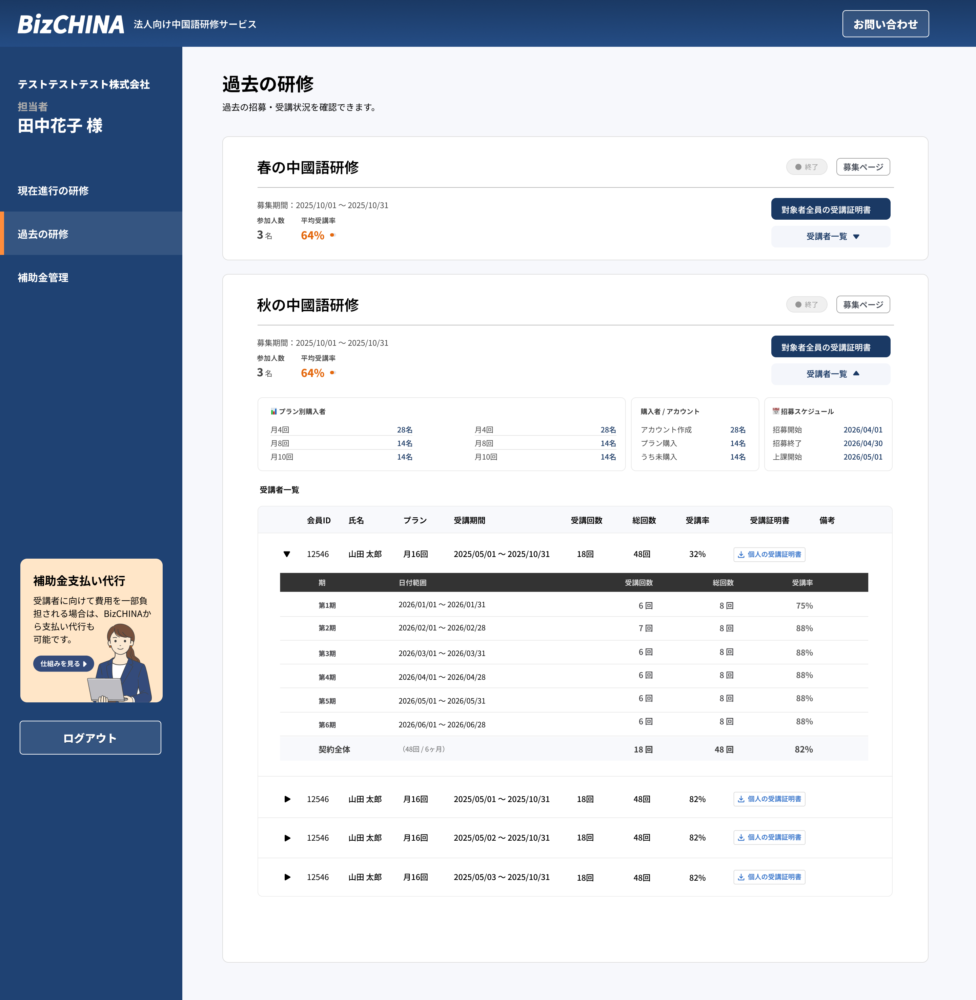

I designed a corporate training management feature for an existing consumer Chinese learning platform — built from scratch.
I handled everything from figuring out what the feature needed to do, all the way through to the final screen designs.
Nearly every part of the training process — from setup to tracking — was handled manually. The more corporate clients joined, the more work piled up. It wasn't a system problem you could patch; the whole workflow needed to be rethought.
Nudging an employee who's behind on training is uncomfortable when you work in the same office. That awkwardness was quietly getting in the way of completion rates, and I saw it as something design could actually fix.
Checking on each company's progress meant reaching out separately — there was no way to just look it up. Problems stayed hidden longer than they needed to, so I wanted to make the answer visible the moment you open the screen.
I designed the whole training flow — from creating an application page to issuing certificates — so managers can handle everything in one dashboard. What used to require separate steps and manual coordination can now be done in one place.
Throughout the design process, I started building simple prototypes based on the actual user flow, even while ideas were still at the hypothesis stage. Working through a clickable prototype made it much easier to catch gaps or missing steps that are hard to spot in written specs alone. It also gave stakeholders something concrete to react to, which helped keep everyone's expectations aligned. I used AI tools in a supporting role to speed up parts of the prototyping work and gradually refine the design from there.
Managers can set up and publish an employee application page on their own — no help needed. There's a live preview on the right that updates as you make changes, so you can see exactly how it'll look before going live.

The first thing managers want to know is whether everyone is on track. I used color to make it instantly obvious when someone is falling behind, and laid out the page so you don't have to scroll to get the full picture. The goal was simple: open the screen and know what to do next.
Automated reminders mean managers don't have to personally nudge employees. Removing that "should I send this?" moment was the whole point — when it's not awkward, it actually gets done.

Managers can select multiple employees and download all their certificates at once — no need to do it one by one. I also added a history page where managers can look back at previous training sessions, so the tool stays useful beyond just the current cycle.


This project pushed me to think beyond what the product needed to do, and into how it would actually feel to use it. The reminder feature is the clearest example — the design decision came from understanding workplace dynamics, not from any technical requirement. It reminded me that good design often means solving a people problem, not just a product one.